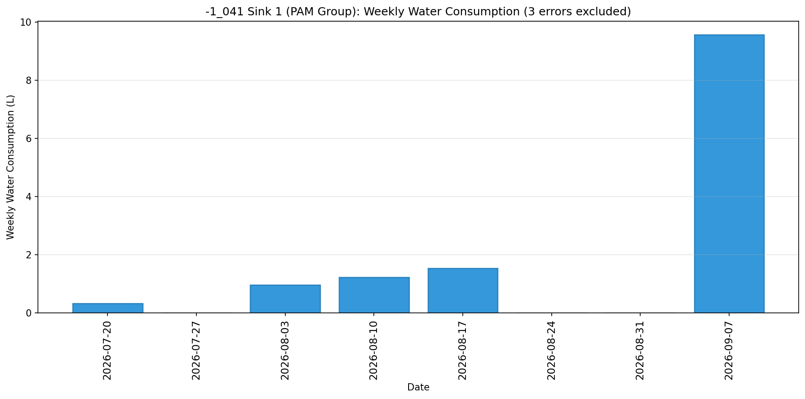
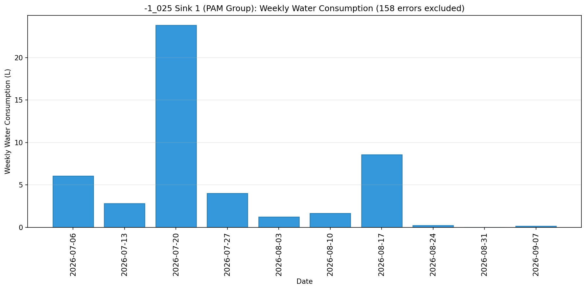

Real-time water usage monitoring by sink • Generated 2026-09-10 08:32:00
Water Consumption: 1.38 L
Data Quality: 3 error(s) detected and excluded from analysis

| Timestamp | Water Consumption (L) |
|---|---|
| 2026-09-07 09:28:41 | 1.38 |
| 2026-09-07 09:28:26 | 1.37 |
| 2026-09-07 09:28:11 | 1.39 |
| 2026-09-07 09:27:56 | 1.39 |
| 2026-09-07 09:27:41 | 1.39 |
| 2026-09-07 09:27:26 | 0.89 |
| 2026-09-07 09:27:11 | 0.46 |
| 2026-09-07 09:26:56 | 0.45 |
| 2026-09-07 09:26:41 | 0.45 |
| 2026-09-07 09:25:52 | 0.20 |
Water Consumption: 0.01 L
Data Quality: 158 error(s) detected and excluded from analysis

| Timestamp | Water Consumption (L) |
|---|---|
| 2026-09-10 06:19:05 | 0.01 |
| 2026-09-10 03:48:55 | 0.01 |
| 2026-09-09 22:04:31 | 0.01 |
| 2026-09-09 17:15:26 | 0.01 |
| 2026-09-09 15:39:49 | 0.01 |
| 2026-09-09 14:53:46 | 0.01 |
| 2026-09-09 01:13:46 | 0.01 |
| 2026-09-08 22:43:50 | 0.00 |
| 2026-09-08 17:09:57 | 0.01 |
| 2026-09-08 14:53:17 | 0.01 |